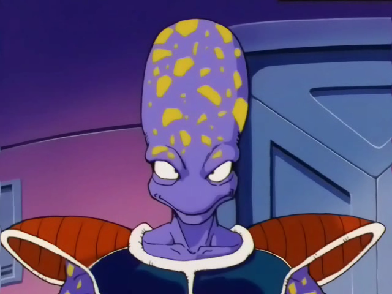
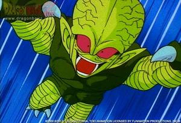

DBZ Abridged Joke Explanation
Click on the locations links (eg '0:56') to see a video of said quote
Episode 1: The Return of Radditz! ... Wait...
0:56
Radditz: Did Kakarot screw this up? Oh goddamnit, I knew we should have sent Turles
1:34
Radditz: So this is why dad said I couldn't keep Appule

Explanation: Appule is a reptilian looking Frieza henchman. Apparently Raditz wanted to keep him as a pet, but Bardock thought he might accidentally kill him. His fears may have been unjustified, given that Radditz only ever became as strong as a saibaman
2:48
Lanipator: DOUBLE SUN... [lani and Vegeta3986 fight] fine... I'm just gonna go practice my Vegeta. Ass.
Explanation: Double Sun... == Double Sunday. It's one of Raditz's attacks in DragonBall Z Budokai [1] As for the lani/Vegeta3986 fight, apparently there were two early DBZ dubs: the
Ocean and
Funimation dub Lani begins to say Double Sunday when he is interrupted by Vegeta3986 who then takes over the role, if you listen closely, you can recognize the voice change. This seems to be a reference to the two dubs. In the Funimation Dub, Chris Sabat voiced Vegeta, and also Raditz once when he made a reappearance in episode 89. Lani also voices Vegeta and started out voicing raditz before being overtaken by Vegeta3986
3:44
Lanipator: I'm drinking OJ! Now it's Apple Juice! Now it's beer!
Explanation: A reference to the censorship in the Ocean dub[1]
4:37
[M Night's face pops onto the screen] What a twist!
Explanation: A double reference to Robot Chicken and the
M Night Shamaam... Shamyalian... shamalamading... oh to hell with it! [1] He's most famous for creating movies with crazy twists, like the Sixth Sense. Also a recurring joke on Reddit.
Episode 2: And They All Lived Happily Ever... Oh..
2:01
Ha ha! Dangly parts.
Explanation: It's from Harvey Birdman Attorney at Law. The character, and show in general, is based on really random things [1]
3:29
Piccolo: (singing) Da da dah da...
Explanation: Piccolo is singing the
Mah Nà Mah Nà song [1]. Perhaps made most famous the the Muppet's
rendition
6:15
Piccolo: Makansa... makans apappa... makansappa... oh to hell with it! Special beam cannon!
Explanation: Piccolo was trying to say "Makankosappo", but could not pronounce it correctly. "Makankosappo" is the original japanese name for the "Special Beam Cannon". [1]
6:28
Piccolo: Riiiiccolaa... ahwwhhhhhaa!
Explanation: A reference to the ricola losange ad [1]
Episode 3: Happily Ever Afterlife
0:22
Nappa: Guy who's as strong as a saibaman says what?

Explanation: Saibamen are green humanoid characters that can be grown from a liquid concoction. Nappa grows them to fight against the Earthlings. Each is as strong as Raditz. That's right, Raditz was so weak, they could actually grow Raditzes.
0:22
King yemma: Mahogany!
Explanation: This guy has a decent explanation. I honestly have no idea though
6:37
King yemma: And not just any Mahogany, but mahogany from Malchior 7 where the trees are 300 ft tall and breathe fire. From these trees my desk was forged 2000 years ago using ancient blood rituals of the Malchior people.
Explanation: Just another play on the mahogany joke. Malchior 7 doesn't seem to be a reference to anything (according to Google). The face on the malchior people is
Lanipator
Episode 4: Snakeway to Heaven
1:13
Goz and mez: we are here to [clap], pump you up!
Explanation: A parody of the German homoerotic duo
Hans and Franz of SNL (who are themselves parodies of Arnold Schwarzenegger) and Goz and Mez's similarities to them. 'Ach nein!' translates to 'Oh no!'
1:13
Nappa: Are we there yet?
Explanation: A reference to the Simpsons
Episode 5: Vegeta: Kills Bugs Dead
Title explanation: A reference to Raid bug killing spray
4:08
Arlian: Welcome to Oz, bitch!
Explanation: A voice clarification mostly. This seems to be a reference to the Wizard of Oz.
4:08
(Barbara Streisand's 'The Way We Were' plays) Barbara Streisand: Memories, light the corners of my mind, misty watercolor memories of the way we were.
Explanation: Barbara Streisand
Episode 6: No One Ever Listens To The Magical Dragon
4:08
Helmet: You must construct additional Pylons.
Explanation: Starcraft joke
5:23
Bulma: I don't get it. Why are we doing this again?
Roshi: Because my sister Baba told us to.
Explanation: Roshi's siser
Baba is a fortune teller. Knowing the future, she tells Roshi to bring Goku back.
Episode 7: Saiyans? On My Planet? (It's More Likely Than You Think).
Title explanation: According to Know your Meme, the joke stems from an
old ad ("Pornography? On my computer? It's more likely than you think.")
4:31
Jimmy: Oh my god, he blew up the cargo robot! ...and the cargo was PEOPLE!
Explanation: In the Ocean Dub, due to their steadfast refusal to mention death, they said that Nappa blew up a cargo robot [1]
4:31
Nappa: But, Vegeta, then you have to worry about the Fraggles.
Vegeta: Oh God damn it, Nappa, nobody's going to get that.
Tien: I did.
Explanation: Fraggles are humanoid characters from the Muppet show
Fraggle Rock that eat radishes. Nappa's joke mistakes 'Raditz' for 'Radish' (Raditz's name is a pun on the word 'Radish'). This constitutes the second Muppet reference in DBZ abridged (the first being Piccolo singing the
Mahna Mahna song)
Episode 8: Nappa's Best Day Ever
1:15
Krillin: KRILLIN LIMIT BREEEEEAK!!!! (uses scatter shot)
Sub: victory music from FF7
Explanation: A reference to Final Fantasy 7. Your character got closer and closer to its 'limit' as it took damage. Once the character reached its 'limit' it could perform a special attack. After Krillin destroys his opponent, the victory music from FF7 is played
1:15
Nappa: I can't get it off, Vegeta! Here, I'll use Rock Smash.
Tien: Chiaotzu! No!
Explanation: As TFS is fond of Pokemon references, this could very well be reference to
Rock Smash
1:15
Krillin: Plan B, Plan B!!
Piccolo: Plan A or Plan B, Krillin?
Piccolo and krillin: KAGEBUSHIN NO JUTSU!
Nappa: Vegeta! I can't...."Believe it".
Explanation: "Full Nelson" is reference to episode 2 where Goku gets Raditz in a full nelson, and Piccolo blasts both of them. The latter two are Naruto references. "KAGEBUSHIN NO JUTSU!" is reference to the
Shadow Clone Technique from Naruto. "Believe it" is Naruto's catch phrase
5:07
Piccolo: Oh FINE! Krillin, GO!
Nappa: FOR PONYYYY! Uagh! He hit me! Gaha! He hit me too!
Explanation: see http://knowyourmeme.com/memes/for-pony and http://i3.kym-cdn.com/entries/icons/original/000/000/282/lfg0042.gif
1:15
Vegeta: Nappa, where did your armor go?
Nappa: I had a hell of a day, Vegeta. I sank their battleship......and their whales.
Aquaman (offscreen): Nooooooooooooo.......
Explanation: 'battleship' is a reference to the game
Battleship in which one can sink an opponent's battleships Aquaman screaming 'noooooooo' is a reference to episode 5, where the super friends convene to stop the Saiyans, and Aquaman can only offer his ability to speak to whales.
Episode 9: The Set Up
1:15
Nappa: It's his turn Vegeta, I have to wait for him.
Krillin: My turn, my turn, MY TURN!
Vegeta: What- Nappa, what are you doing?
Explanation: I believe this is another FF7 reference, in which each side takes turns attacking.
3:37
Nappa: Oh you-a-making-me-so-mad! Vegeta, look. I'ma firing my BLARGH (face turns into Shoop the Whoop)
Explanation: Shoop the Whoop (aka I'M A’ FIRIN’ MAH LAZER) is a meme, derived from the Cell Saga.
Not sure where the you-a-making-me-so-mad comes from. Maybe I Love Lucy?
Episode 10: Part 1: The Punchline
6:03
Goku: Yes, Gohan. Tell her. ("Coming Undone" by KoRn plays) To put dinner on. ("Coming Undone" plays again) ‘Cause I’m hungry. (plays a third time)
Explanation: just wanted to reference the song
6:03
Narrator: Meanwhile, back at the ranch.
Bulma: Good times, good times… Whatever happened to Launch?
Sub: Silence
Oolong: And remember the Red Ribbon Army?
Roshi: Who?
Episode 10: Part 2: The Punchline (part 2)
2:08
Oozaru vegeta: Don't care; evil.
Goku: AAAAAAAOOWWW! That was in terrible ta-a-aste.
Explanation: Christopher Reeves, former Superman actor, is paralyzed and thus is not 'walkin'. Also, Vegeta's once again cognizant of being 'evil'. See epsisode 10 at 2:16
2:17
Oozaru vegeta: Exactly, now die!
Goku: A -- what?
Explanation: Arlians were the insectoid people from the bug planet that Vegeta blew up on his way to Earth
3:04
Krillin: Ah, Jesus Christ Vampire Hunter.
3:19
Gohan: Get your filthy hands off of him, you damn dirty ape!
Oozaru vegeta: Oh, very creative. And what exactly will you do if I don't?
Explanation: from the 1968 film Planet of the Apes.
Charlton Heston quote. Pretty famous. Somehow everyone in the DBZ Abridged universe is familiar with American pop culture.
Episode 10 Finale
Explanation: Icarus is a young purple dragon that is one of Gohan's closest non-humanoid friends. He's blown up by Turles in DBZ Tree of Might
3:21
Researcher1: … suck it, Spock!
Researcher2: Well sir, I find it highly illogical to refer to this as a "ship"; the spherical design incorporates no propulsion system. It looks more like an orbiting vessel, or a satell—whaaa!
Explanation: William Shatner had herky-jerky overacting style, similar to these researchers.
Episode 11: Looks Like The Z-Warriors Are Blasting Off Again!
6:18
Dr briefs: Damn moon-speak!
Toilet: Toire de arimasu! (Japanese for "I am a toilet")
Explanation:
6:03
Bulma: Yep! I’ve gotten everything worked out. Well, except for one thing- we couldn’t fix the translator for the toilet.
Toilet: ICH BIN GEFÜLLT MIT PISSWASSER! (German for "I am filled with pee")
Explanation:
Episode 12: A Rose By Any Other Namek
6:03
Krillin: Krillin’s log, stardate, uh, November 28th. We’ve been flying for two weeks now. Starting to feel verrrry pent up. Not just from being trapped on the ship of course, but from Bulma walking around in nothing but her UNDERWEAR! I would relieve this tension but I have no alone time as the toilet keeps SCREAMING AT ME!
Toilet: ScheiBen Sie in mein Gesicht (German for "Shit in my face")
Explanation:
Zaacro: Uh, are you sure they're ok? They’ve been out for a long time.
Raiti: Of course I'm sure zey're ok! Now just follow ze plan!
Episode 13: Dr. Briefs Made This Episode In A Cave... WITHABOXOFSCRAPS!
Title explanation: Perhaps this is referencing the ridiculous inventiveness of Dr. Briefs (Bulma's dad)?
2:01
Krillin: Don't you mean "OR we'll shoot you?"
Freeza soldier 2: We know what we said!
Sub: Blows up the ship
Toilet: SCHEISS!!!! (shit!)
Explanation:
2:37
Bulma: I can't believe this. We're stranded on an alien planet. It's like "Pitch Black" only our Vin Diesel is a total bitch.
Explanation: Krillin is their Vin Diesel, as he's the leader of their group and bald.
4:25
Kame: Kame house... where the beaches are fine, and the bitches are even finer
Explanation: In Dragonball, Roshi was obsessed with cute women
4:30
Kame: Can you speak up? I'm not wearing any pants
Explanation: A reference to Homer Simpson: You'll have to speak up, I'm wearing a towel[1]
Episode 14: No Country for Old Namekians
0:23
Gohan: Hey, Krillin, look! The Dragon Balls!
Krillin: Whoa, those things are huge! AC/DC be damned.
Explanation: ACDC is a band with a song called "Big Balls". "But we've got the biggest...balls of them all!"
Episode 15: Operation Dodoria Drop
Goku: Yaaay!
Sub: Goku Pushes buttons to cycle through songs
Paul stanley: Live to Win
Bill conti: Gonna Fly Now (Rocky Theme)
Stan bush: Never Surrender
Team america: Montage
Lazy town: Cooking By the Book
Explanation: Cooking By the Book is an
old meme from the ytmnd days.
Episode 16: Vam Qan Namek
Title explanation: Klingon (aka Namekian) for 'This Old Namek', a reference to
This Old House
Sub: children laugh
Namekian: And that's the story of the great drought.
Explanation: We learn in episode 30 that the great drought the result of Guru drinking all of the water (how do you think he got so fat?). Naturally, he shifted the blame onto the Albino Namekians, and they never heard from them again
Vegeta: To be perfectly honest, you're not that different, you're just a lot less subtle about it OH MY GOD! Ugh! Agh! (more grunting sounds) Poit! Zort! Apples!
King kai: KAIO KEN!! It's in my f*cking name! Like "King Kai", as in Kaio-Sama! That is it! None of you are learning any of my techniques! Neither the Kaio Ken nor the Genki Dama!
Explanation: a
weeaboo is "Someone who is obsessed with Japan/Japanese Culture/Anime, etc. and attempts to act as if they were Japanese, even though they're far from it."
Episode 17: A Lovely Bunch of Dragonballs
Title explanation: A reference to "I've got a lovely bunch of coconuts" by Merv Griffin
Appule: You know, Vegeta, I got to admit it was pretty impressive how you went all man hunter on us. But now you're all ours, and I can't wait to watch Zarbon break you like a glue stick… [Vegeta awakens]Here I come Eachpei!
Zarbon: Report!
Sub: ...
Explanation: Eachpei is Appule's brother. Eachpei is a pun on Peach. 'Cause all of Freeza's henchmen are named after Fruit. [1] Eachpei makes an appearance in the TFS Bardock Special, where he says 'Tell my brother, Appule, I love him!' before he's killed by Bardock.[2]
Vegeta: (To "A Lovely Bunch of Coconuts") I've got a lovely bunch of dragon balls, doo doo doo doo doo doo
Explanation:
Zarbon: Well, I thought he could handle it!
Freeza: Appule couldn't handle a shot of raspberry schnapps much less Vegeta! Oh, where's the damn phone, I need to make another call.
Explanation: I just thought this was funny
King kai: He... hung up on me! How the hell did he even do that! Dammit, I'll call him back! Goku, I swear to God, I will ride your ass on this one!
George takei: Oh my...
Explanation: George Takei is a famously gay actor who played Mr. Sulu in Star Trek.
HT
Episode 18: It's a Mad, Mad, Mad, Mad Saiyan
Title explanation: A reference to "I've got a lovely bunch of coconuts" by Merv Griffin
Explanation: This is the only thing I could find
Krillin: DO AS I SAY, FOR I AM THE HEAVENLY BUDDHA!
Explanation: Krillin is a Buddhist asshole
Episode 19: 到着を恐怖!! 敬礼, ギニュー特戦隊!!
Title explanation: According to
google tranlsate the title translates to: Fear! Salute the arrival, Rangers Ginyu!
Gohan: Oh, yeah!
Vegeta: Goddammit!
Explanation: nada
Guldo: That's right, keep on your guard. Don't drop it, not even for an instant... Za Warudo!
Krillin: What are you... going on about... *gets crushed by steam roller*
Explanation: A reference to Dio Brando of JoJo's Bizarre Adventure. [1] Za Warudo is his special attack... where he drops a stream roller on his opponent
Freeza: Good. And they have the ringtone I wanted?
Ginyu: Yes Sir.
Sub: Scouter plays Maximum the Hormone: F
Scouter: Frieza, Frieza, Frieza, Frieza!
Episode 20: Namekimania
Title explanation: A reference to Wrestlemania. The whole episode parodies it. This battle resembles the tag-team, showboating style of WWF
8:35
Recoome: You see vegeta. You sit there and brag about how the Saiyans are the mightiest warriors in allll the universe.
Explanation: Recoome is a parody of Hulk Hogan
Explanation: In Mass Effect, you can take your character down the Paragon (good) or Renegade (evil) path. Vegeta is obviously a Renegade.
Episode 21: Stop! Celebrate and Witness, Goku's Back From 100X Fitness!
Title explanation: Title is a parody of the opening line in Ice Ice Baby by Vanilla Ice
Goku: Butter! That’ll go great on my Grand Slam!
Jeice: Burter! No!
Explanation: Burter is named after butter
Episode 22: The Good, the Bad, and the Purple
Title explanation: A take on the Eastwood movie The Good, the Bad, and the Ugly
Freeza: Well, then. If this is the only course of action available to me, I accept. I’ll dispatch of this worm, and then I’ll be back for you, slug.
Guru: Leave my brother out of this!
Episode 23: Grand Theft Goku
1:33
Freeza soldier 1: It’s called the Wilhelm Scream, man. It’s like the one in Star Wars where the stormtrooper falls.
Explanation: The
Wilhelm Scream is infamous for its widespread use in the movie industry (most notably in Star Wars).
3:42
Krillin: Huh. Maybe if I sing to it. I know a song that gets on everybody’s nerves!
Explanation: A reference to the most annoying song in the world
6:58
Vegeta: Thank you, sir, may I have another?
Explanation: A reference to Animal House
Explanation: Jurassic Park ref
Episode 24: The Best Laid Plans of Saiyans and Nameks
0:42
Freeza: Well, maybe so, but I can’t quite be a racist against a race that doesn’t exist. Like the Clorfors. Dirty, money-grubbing Clorfors. Tried to clorf me right out of my money. Blew those little bastards up is what I did.
Nail: Hmph. Racist.
Explanation: Frieza, being evil, represents a caricature of a typical nazi/anti-semite here.
2:19
Gohan: What do you mean?
Krillin: Well, I mean, it feels like we’ve been here for, like, a year.
Explanation: The Frieza saga notoriously lasted for-frickin-ever
6:41
Vegeta: First immortality, then the bitches… (“Minnie The Moocher” plays as the three sneak off)
Explanation: Minnie The Moocher is a a famous jazz song. Played in the movie The Blues Brothers
Episode 25: Nail is Piccolo, and so can you!
Title explanation: reference to I Am America (And So Can You!)
Piccolo: Wow. Unreal! My gosh. This is amazing! I feel INCREDIBLLLLE! Yes! Yes! Yes! Yes! I can win! I feel great! I—CAN—DO—THIS—HAAA—
Explanation: reference to Piccolo's excessive reaction to fusing with nail
King vegeta: Freeza, can I sit down and have a word with—
Freeza: Yatta.
Generic fight game announcer: K.O! You win!
Explanation: street fighter thing
Freeza: (sings to “My Favorite Things”) Peaceful young races with fires on their houses, millions of voices all silenced like mouses, watching the cowards bow towards their new king; these are a few of my favorite things…
Explanation: sound of music ref
Episode 26: Alien VS. Piccolo
Title explanation: Alien vs Predator reference
Vegeta: No one ever goes to Freeza Planet 419. Not since its species miraculously repopulated.
Explanation: aka Kanassa
Freeza: So, Namekian, what do you think of my third form?
Piccolo: I think Ridley Scott’s gonna sue somebody.
Explanation: aliens ref
Dende: Because you touch me, and you’re not getting back up again. That’s right. I’m your White Mage. And NOBODY f**ks with the White Mage. *gets blown up by Freeza*
Explanation: White Mage
Explanation:
Gohan: (thinking) Crap baskets
Explanation: another great innocent Gohan cuss
Episode 27: The Saiyan Formerly Known as Prince
Title explanation: the artist formerly known as prince
Vegeta: Healer’s down!
Krillin: Need a rez!
Gohan: Out of manna!
Explanation: rpg reference
Goku: Awesome. I’ma deck you in the schnozz!!!
Freeza: I’m sorry, that’s a new one. Uh...who...are you, exactly?
Explanation: reference to past episode
Episode 28: Leave it to Freezer
Title explanation: Leave it to Beaver reference
8:38
Freeza: Uagh!
Krillin: Grooooooooossss! *Krillin owned count 27*
Explanation: Frieza puke (from being spun around by Goku) nails Krillin
Goku: Awesome. I’ma deck you in the schnozz!!!
Freeza: I’m sorry, that’s a new one. Uh...who...are you, exactly?
Explanation: reference to past episode